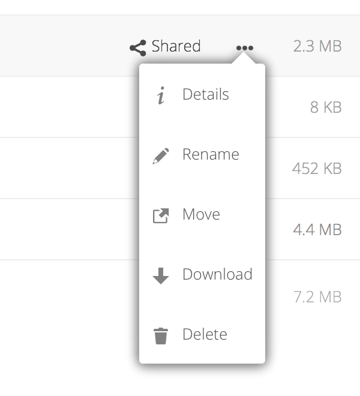

Tizhout ho restroù en ur implijout an etrefas Web Nextcloud
Posupl eo deoc'h tizhout ho restroù Nextcloud gant an etrefas Web Nextcloud ha krouiñ, rakwelout, embann, lemel, rannañ hag adrannañ restroù. Ho merour Nextcloud en deus an dibab da zivarrekañ ar perzhioù-se, neuze ma vank unan en ho sistem, goulennit d'ar merour.
Gallout a rit reiñ klavioù da restroù. Evit krouiñ klavioù, digorit ar restr e-barzh gwelet Munudoù. Lakait ho klav. Evit lakaat meur a glav, klikit war an douchenn distro goude bezañ bet krouet pep klav. Pep klav a zo ur c'hlav sistem, ha rannet int gant pep implijer er servijour Nextcloud.
Then use the Tags filter on the left sidebar to filter files by tags:
Posupl eo deoc'h lenn videoioù war Nextcloud gant ar meziant lenner video en ur glikañ war ar restr. Lenn videoioù war-eeun gant al lenner Nextcloud orin a cheñch hervez ar furcher web ha stumm ar video. M'en deus aotreet ho merour Nextcloud al lenn video war-eeun, ha ne dro ket war ho furcher Web, gallout a ra bezañ ur gudenn furcher. sellit ouzh https://developer.mozilla.org/en-US/docs/Web/HTML/Supported_media_formats#Browser_compatibility evit ar stummoù media douget er furcher Web.
Nextcloud a c'hell reiñ rakskeudennoù ivin evit skeudennoù, MP3 ha restroù testenn, m'az eo aotreet gant ar merour. Lakait ho logodenn a-us d'ur restr pe teuliad evit gwelout ar c'hontroloù evit an oberiantizoù-mañ :
Karetañ
Click the star to the left of the file icon to mark it as a favorite:
You can also quickly find all of your favorites with the Favorites filter on the left
sidebar.
Roll dic'hlannañ
The Overflow menu (three dots) displays file details, and allows you to
rename, download, or delete files:

The Details view shows Activities, Sharing, and Versions information:
Ar skeudennig rod dantek Arventennoù en diaz a-gleiz a aotre ac'hanoc'h da ziskouez pe da skoachañ restroù en hoc'h etrefas Nextcloud. Anvet int ivez dotfiles, abalamour ez int rakgeriet gant ur pik, da skouer ".mailfile". Ar pik a lâr d'ho sistem oberiantiz da skoachañ ar restroù en ho furcher restroù, nemet m'ho peus c'hoant e vefent gwelet. Peurvuiañ ez int restroù arventennoù/stummoù, neuze ar fed e c'hellont bezañ skoachet a vihana al luziañ.
Posupl eo deoc'h gwelout restroù testenn diwasket, restroù OpenDocument, videoioù, ha restroù skeudennoù er gweler diabarzh Nextcloud en ur glikañ war an anv restr. Stumm restroù all a zo posupl gwelout marteze m'en deus ho merour Nextcloud aotreet anezho. Ma ne c'hell ket Nextcloud rakwelout ur restr, kregiñ a ra da bellgargañ ar restr d'hoc'h urzhiataer.
Merdeiñ a deuliad da deuliad e Nextcloud a zo simpl evel klikañ war un teuliad evit digeriñ anezhañ hag implijout ar bouton distreiñ war ho furcher evit mont en-dro d'ul rak-live . Nextcloud a ro ivez ur varenn-verdeiñ e penn uhelañ lec'h ar restroù evit ur merdeiñ buan.
Any folder that has been shared is marked with the Shared overlay icon.
Public link shares are marked with a chain link. Unshared folders are not marked:
Posupl eo deoc'h choaz ur restr pe teuliad pe meur a hini en ur glikañ war ar boestoù-gwiriañ. Evit choaz pep restr en teuliad lec'h m'emaoc'h, klikit war ar voest-wiriañ e penn uhelañ ar roll restroù.
Pa choazit meur a restr, posupl eo deoc'h lemel pep hini, pe pellgargañ anezho evel ur restr ZIP en ur implijout ar bouton "Lemel" pe "Pellgargañ" a zeu war wel er penn uhelañ.
Note
Ma ne vez ket gwelet ar bouton "Pellgargañ, n'en deus ket aotreet ar merour ar perzh-mañ.
Posupl eo deoc'h diblasañ restroù ha teuliadoù en ur ruzañ ha leuskel anezho e n'eus forzh peseurt teuliad.
Krouiñ pe en em genstagañ d'ul liamm rannadennoù kevredet
Ur C'hloud rannañ Kevredet a aotre staliañ rannadennoù restr eus ur servijour Nextcloud pell, ha merañ anezho evel ur rannadenn diabarzh. Sellit ouzh Implijout rannadennoù kevredet evit deskiñ penaos krouiñ hag en em genstagañ d'ur rannadenn Cloud Kevredet.


Displegañ
Use the Details view to add and read comments on any file or folder. Comments are visible to everyone who has access to the file: